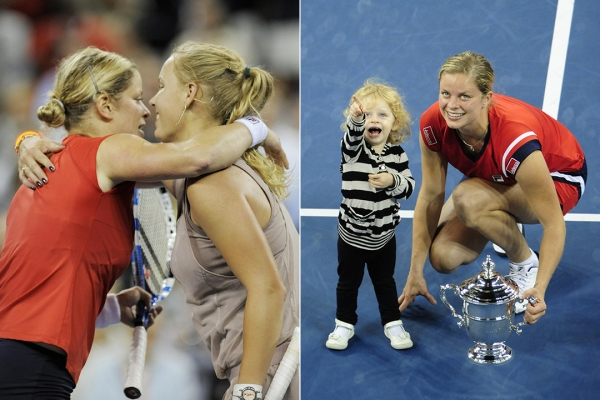

Le retour de Caroline Wozniacki.
Concourir en tant que mère et faire un retour au tennis sont deux choses qui ne sont pas rares dans
le tennis professionnel.
Mais Caroline Wozniacki a poussé ce scénario à un autre niveau avec son annonce de retour jeudi.
L'ancien n°1 mondial et champion de l'Open d'Australie a surpris le monde du sport avec la nouvelle,
révélée dans un article à la première personne publié dans Vogue .
Wozniacki va bientôt avoir 33 ans et a deux enfants. Elle n'a pas joué depuis plus de trois ans; son
dernier match officiel a été une défaite au troisième tour contre Ons Jabeur à l'Open d'Australie
2020
Elle reviendra au sport lors de la saison nord-américaine sur terrain dur à Montréal, avant son
retour en Grand Chelem à l'US Open. Les organisateurs du tournoi ont déjà annoncé que Wozniacki
recevrait une wildcard pour le tableau principal pour concourir à Flushing Meadows.
Ensuite, elle a l'Open d'Australie 2024 et les JO de Paris 2024 dans son viseur.
Plusieurs stars du tennis féminin de premier plan sont devenues mères ces dernières saisons.
Il y a eu Victoria Azarenka et Serena Williams en 2016 et 2017 respectivement, et depuis, Elina
Svitolina, Angelique Kerber et Naomi Osaka ont emboîté le pas.
.svg)